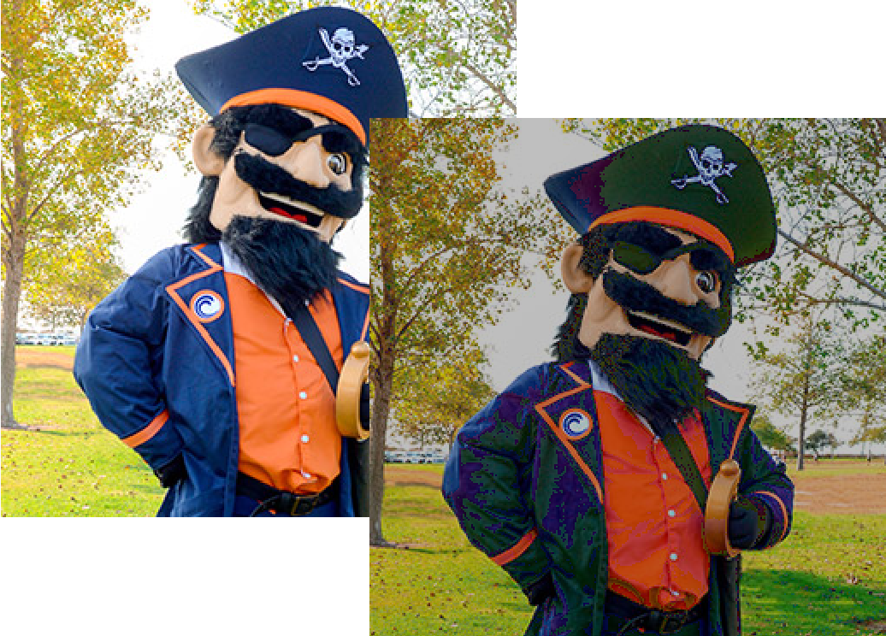

The Darken Filter
The first filter we'll write is "darken". Here's the algorithm:
For every byte
if it is greater than 64 then
subtract 64 from it
rewrite the byte
Here's what the processing code looks like:
while (beg != end)
{
if (*beg > 64) {
*beg = *beg - 64;
}
beg++;
}In the VSCode, you can click on the two images to see the effect of applying the filter:

 This course content is offered under a
CC
Attribution Non-Commercial license. Content in this course
can be considered under this license unless otherwise noted.
This course content is offered under a
CC
Attribution Non-Commercial license. Content in this course
can be considered under this license unless otherwise noted.